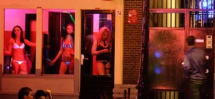
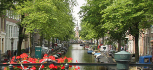
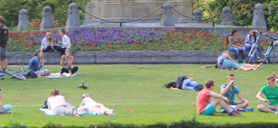
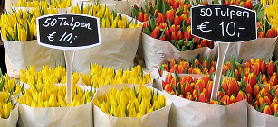

Cinturão de Canais
Colocado na lista de Patrimônio Mundial da UNESCO, o famoso "cinturão de canais" é uma excelente introdução para os numerosos pontos turísticos da cidade.

Distrito Vermelho
É muito provável que você já tenha ouvido falar sobre este bairro. O Distrito Vermelho supera todas as expectativas.

Distrito Jordaan
Um bairro agradável, com uma mistura de todos os tipos de estilos e atividades. Fundado em 1612 para a força de trabalho, o Jordaan é hoje um dos locais mais desejados na Holanda.

Vondelpark
Situado no centro de Amsterdam, o parque foi concedido o estatuto de monumento governamental, o que reflete o seu valor histórico e cultural.

Mercado das Flores
Suportado sobre barcos, o mercado de flores é o único mercado flutuante do mundo e oferece todos os tipos de tulipas, narcisos, outros bulbos e flores.